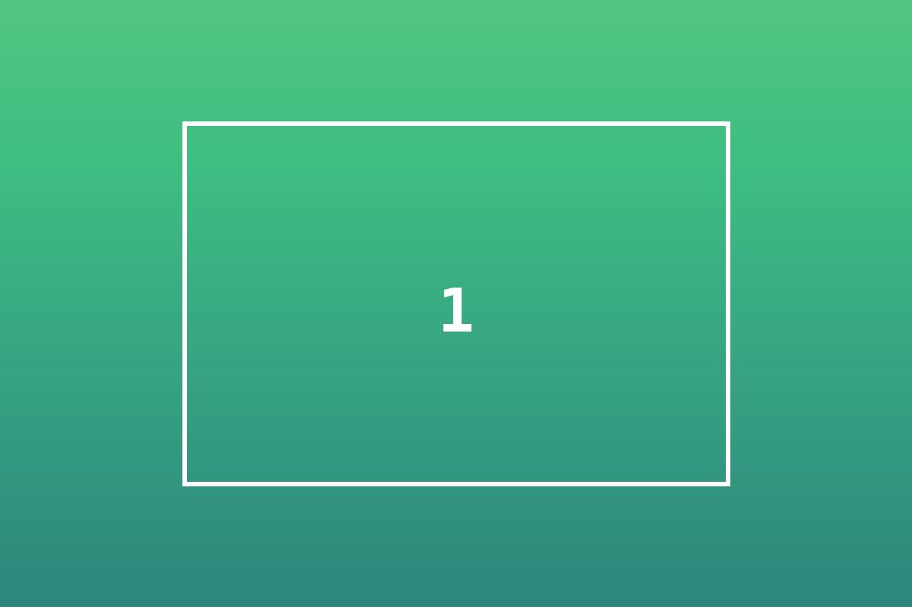
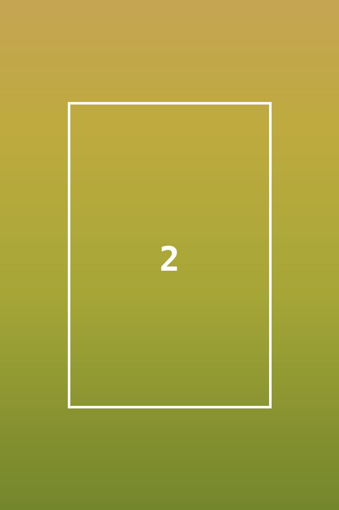
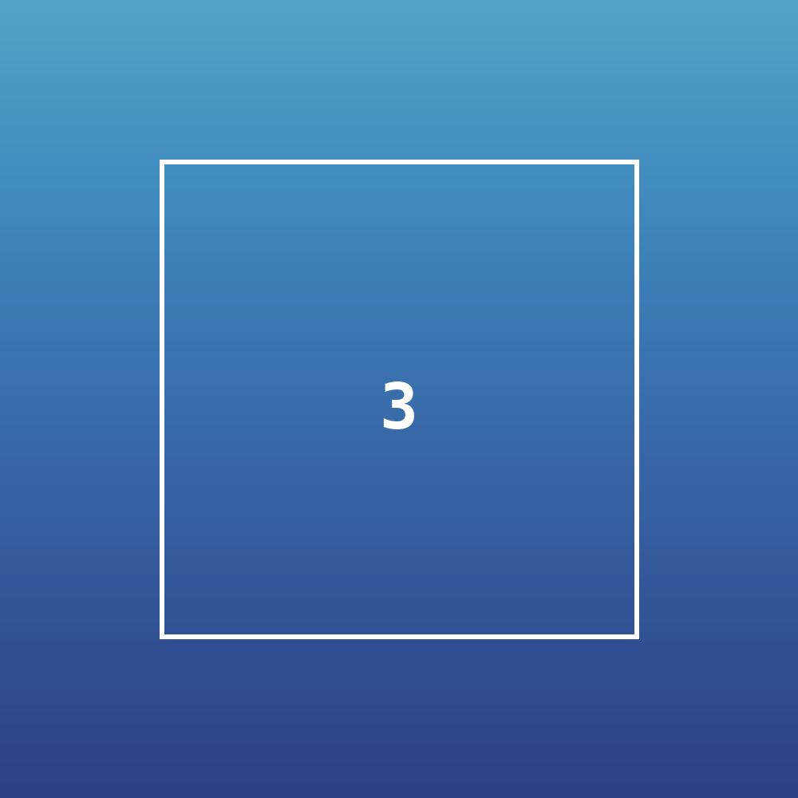
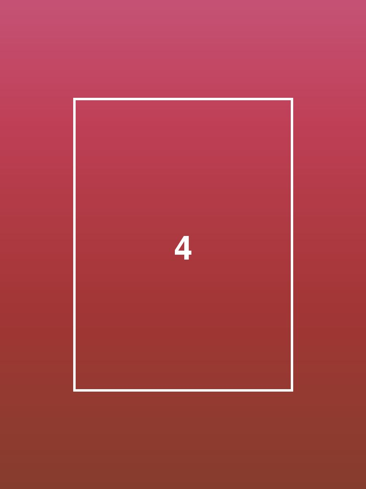
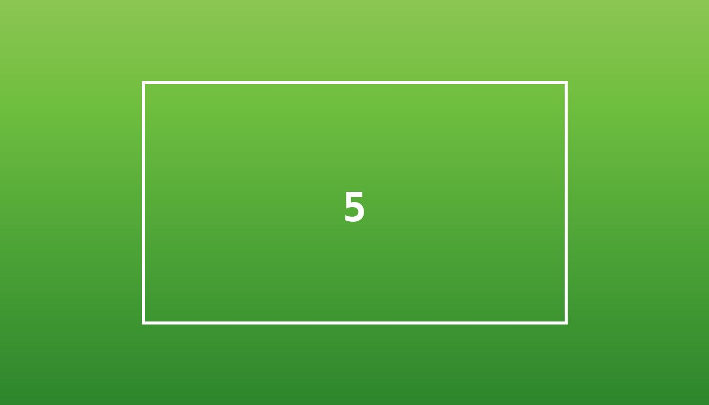
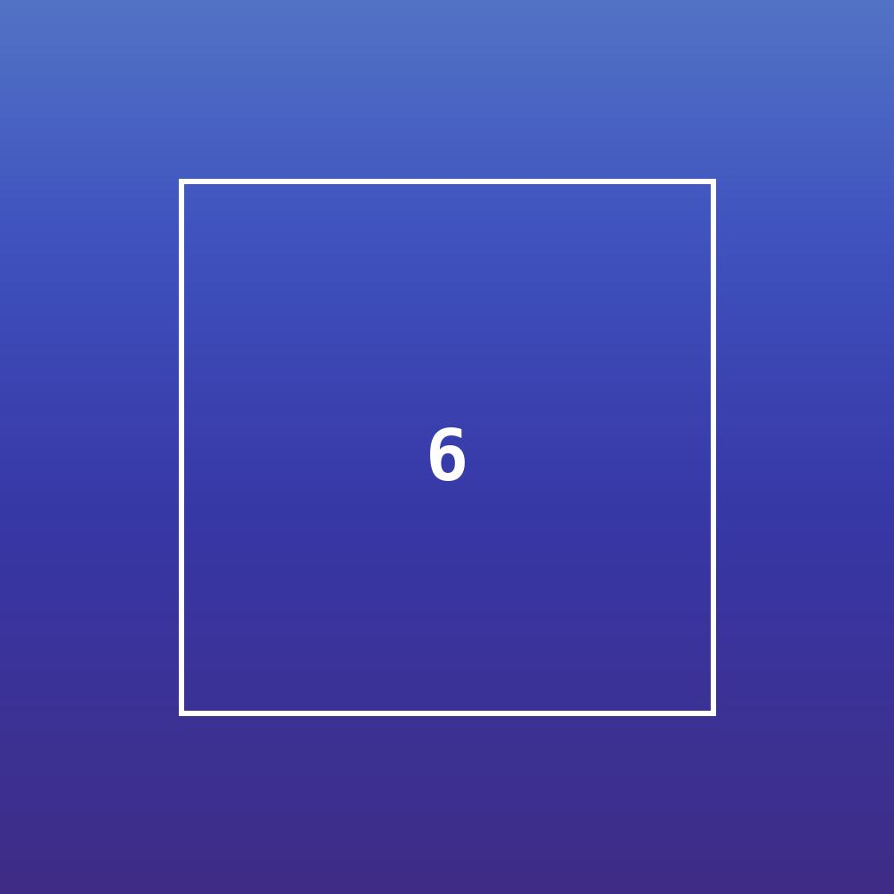
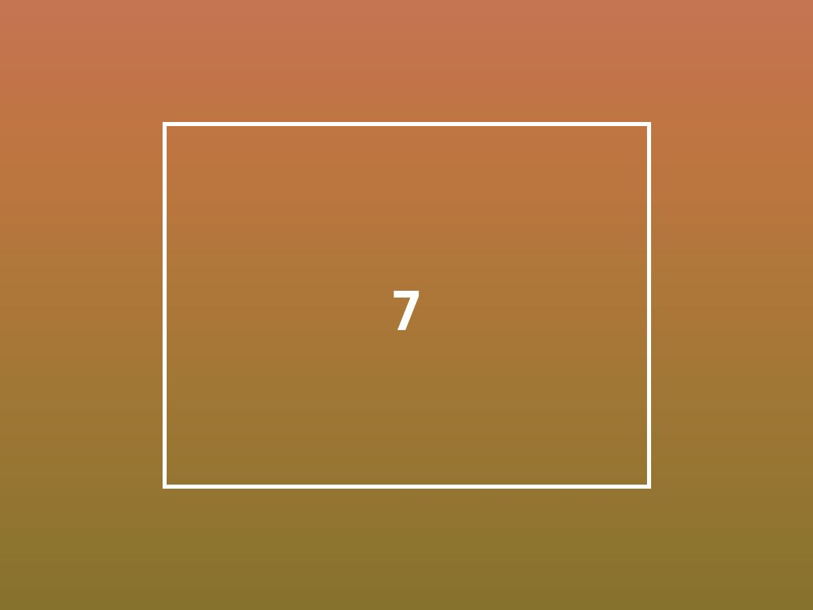
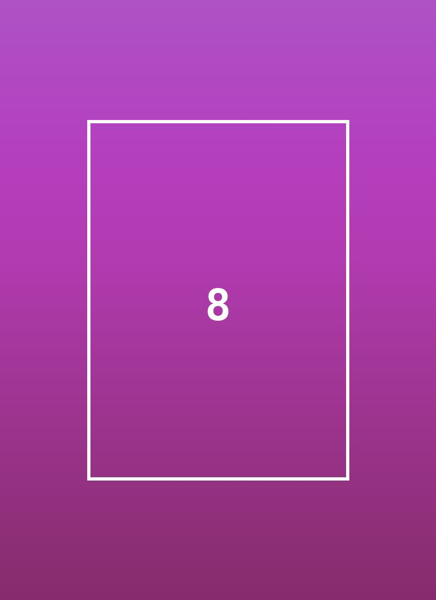

Grid – Übungswände
Zu jedem Teil im Handout gibt es hier eine eigene Wand. Öffnet diese Seite im Browser und
die Datei css/uebung.css im Editor. Dort ein- und auskommentieren, speichern, neu laden,
beobachten. Die Nummern entsprechen den Teilen im Handout – die Teile 8 und 9 lassen wir heute aus.
grid-Badge. Ein Klick darauf zeigt das Raster mit den Liniennummern direkt auf der Seite.
Bei Grid ist das fast unverzichtbar.
Teil 2: Container und Kinder
- Kommentiert bei
display: gridein. Sieht es anders aus als vorher? Warum wohl? - Jetzt zusätzlich
grid-template-columns. Was passiert mit den Bildern 4 bis 6? - Zum Schluss
gapdazu.
.wand-2
Teil 3: Spalten und Zeilen
- Probiert die Varianten von
grid-template-columnsnacheinander aus. Zieht dabei das Browserfenster schmaler und breiter: Welche Spalten wachsen mit, welche nicht? - Bei
150px 1fr 1fr: Wie breit sind die beiden1fr-Spalten? Rechnet nach. - Bei
100px 100px 100px: Was passiert mit dem Platz rechts? - Lasst
repeat(4, 1fr)aktiv und probiert zusätzlich die beiden Zeilen-Varianten. Welche Zeilen sind betroffen, welche nicht?
.wand-3
Teil 4: gap
- Probiert die verschiedenen Werte für
gap. - Kommentiert
gapwieder aus und probiertrow-gapundcolumn-gapzusammen. Wie wirkt die Wand jetzt – eher wie Zeilen oder wie Spalten?
.wand-4
Teil 5: Linien, nicht Zellen
- Erst überlegen, dann einkommentieren: Bild 1 bekommt
grid-column: 1 / 3undgrid-row: 1 / 3. Wie viele Felder wird es belegen? Zeichnet es auf, bevor ihr es ausprobiert. - Was passiert mit den Bildern 2 und 3, sobald Bild 1 platziert ist?
- Probiert bei Bild 2 die drei Schreibweisen aus. Welche beiden führen zum selben Ergebnis?
- Platziert Bild 3 mit
grid-area. Achtung, die Reihenfolge der Zahlen ist ungewohnt. - Für Schnelle: Schreibt die Platzierung von Bild 1 so um, dass es die ganze unterste Zeile füllt.
.wand-5
Teil 6: Weissraum
- Schaut zuerst, wo die drei Elemente ohne Platzierung landen.
- Kommentiert die Platzierungen ein. Wie wirkt die Fläche jetzt?
- Eigene Komposition: Verändert die Zahlen, bis ihr eine Anordnung habt, die euch gefällt. Denkt an die Plakate von Brockmann: Spannung entsteht oft gerade durch den leeren Raum.
.wand-6
Teil 7: Überlagerungen
- Platziert beide Elemente, sodass sie sich überlappen. Welches liegt oben – und warum?
- Holt das untere mit
z-indexnach vorne. - Spielt mit
opacityund verschiebt die Linien, bis die Überlagerung spannend wird.
.wand-7
Teil 10: Responsive ohne Media Queries
- Zuerst
repeat(4, 1fr): Zieht das Fenster ganz schmal. Was passiert mit den Bildern? - Dann
repeat(auto-fill, minmax(120px, 1fr)): Wie verhält sich die Wand jetzt? - Ändert die 120px auf 200px. Wann springt ein Bild in die nächste Zeile?
.wand-10
auto-fill oder auto-fit?
auto-fill und auto-fit und
vergleicht: Was passiert mit dem leeren Platz rechts?
.wand-10b
Teil 11: Die Petersburger Hängung
- Schritt 1: Kommentiert die Formate bei
.quer,.hochund.grossein. Wo entstehen Lücken? - Schritt 2: Kommentiert
grid-auto-flow: denseein. Was ist mit den Lücken passiert? Und mit der Reihenfolge der Nummern? - Zieht das Fenster schmaler und breiter. Die Wand hängt sich immer wieder neu.
.wand-11
Bonus: Eine Wand mit echten Bildern
Dasselbe Prinzip, jetzt mit Bildern. Kommentiert in uebung.css beim Bonus die Formate und
dense ein.
Dann: Legt eigene Bilder in den Ordner images/ und passt im HTML src und
alt an. Überlegt euch, welche Bilder quer, hoch oder
gross hängen sollen – und was passiert, wenn ein Hochformat in einem Querformat-Feld landet.
.bildwand







